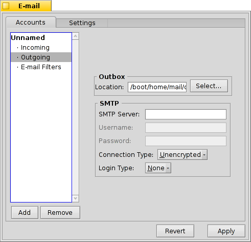

| Indeks |
|
Membuat akun baru Pengaturan akun Mengatur e-mail masuk Mengatur e-mail keluar Penyaring notifikasi e-mail Mengatur layanan Mail |
 Surel-surat elektronik (E-mail)
Surel-surat elektronik (E-mail)
| Deskbar: | ||
| Lokasi: | /boot/system/preferences/E-mail | |
| Pengaturan: | ~/config/settings/Mail/* |
Haiku menyediakan sistem yang mengambil email secara teratur melalui Layanan Mail (juga dikenal sebagai mail_daemon) dan menyimpan setiap email sebagai file teks tunggal. Ini mem-parsing email dan mengisi atributnya dengan semua informasi header yang diperlukan, seperti dari, ke, subjek dan statusnya yang belum dibaca. Sekarang dapat ditanyakan oleh Anda atau aplikasi apa pun. Sistem ini juga memudahkan pengalihan klien surel karena semua data dan konfigurasi Anda tetap sama.
Konfigurasi dilakukan di panel preferensi E-mail.
 Membuat akun email baru
Membuat akun email baru
Mari kita pergi melalui proses pengaturan akun email.
Anda mulai dengan mengklik tombol untuk membuat akun baru tanpa nama. Ini membuka panel tempat Anda mengisi info akun Anda:

Pertama, Anda mengatur bagaimana Anda mendapatkan email Anda, melalui atau .
Sekarang Anda memasukkan alamat email Anda, nama login dan kata sandi, berikan nama akun yang akan dikenal di bawah Haiku dan nama asli Anda.
Jika akun Anda berasal dari penyedia email utama, Haiku sudah mengetahui semua detail teknis seperti alamat IP server. Jika itu tidak terjadi, mengklik akan membuka jendela lain untuk memasukkan informasi ini manual:

Anda pertama-tama mengatur nama Server, jenis Login dan jenis Koneksi untuk surat masuk, di bawah itu untuk surat keluar. Anda harus menemukan informasi yang diperlukan di situs web penyedia email Anda.
Lihat di bawah untuk info lebih lanjut tentang berbagai pengaturan dan opsi tambahan.
pengaturan akun
Dengan memilih nama akun di daftar kiri, Anda dapat mengubah beberapa pengaturan umum:

Nama Akun adalah nama yang ditampilkan misalnya dalam daftar akun di preferensi E-mail. Nama asli adalah nama yang dilihat seseorang ketika ia menerima surat dari Anda. Alamat pengembalian adalah alamat email yang digunakan ketika seseorang membalas balasan Anda biasanya alamat yang sama dengan yang Anda kirimi email.
Jika Anda ingin menggunakan akun email untuk hanya mengirim atau hanya menerima email, Anda dapat menonaktifkan / mengaktifkan penggunaan itu dengan mengklik kanan nama akun di daftar leftside untuk mengatur tanda centang yang sesuai.
Lebih lanjut tentang pengaturan email masuk
Klik dengan nama akun Anda untuk mengatur bagaimana email diterima.

Pertama adalah alamat untuk email masuk. Jika penyedia Anda meminta Anda untuk masuk ke port tertentu, Anda menambahkannya ke alamat tersebut, dipisahkan dengan tanda titik dua. Misalnya, pop.your-provider.org:1400.
Kemudian Anda memasukkan informasi login Anda, nama Login dan Kata Sandi, dan jika perlu ubah jenis Login dari ke untuk otentikasi.
Jika Anda menggunakan POP3 dan mengambil email dari akun ini dari komputer yang berbeda, Anda mungkin ingin mengaktifkan opsi untuk dan secara lokal.
Jika Anda menggunakan IMAPsebagai gantinya, Anda memiliki opsi untuk secara lokal. Anda dapat menentukan untuk hanya menyinkronkan dengan folder tertentu dan subfoldernya.
Selain itu, Anda dapat memilih untuk hanya . Ini hanya akan mendapatkan tajuk dan Anda dapat memutuskan apakah Anda ingin mengunduh sisa pesan plus kemungkinan lampiran setelah melihat subjek dan siapa yang mengirimnya. Anda memiliki koneksi yang lambat.
Anda dapat mengubah Tujuan kotak masuk Anda (default: /boot/home/mail/in/), yang berguna jika Anda ingin memisahkan email dari akun yang berbeda ke dalam folder mereka sendiri. Namun, kueri juga memungkinkan Anda menyelesaikan masalah.
Lebih lanjut tentang pengaturan e-mail keluar
Klik dengan nama akun Anda untuk mengatur cara pengiriman email.
Pertama adalah alamat server SMTP untuk surat keluar. Seperti dengan server masuk sebelumnya, Anda dapat menggunakan port tertentu jika diperlukan, mis. mail.your-provider.org:1200.
Jika Anda perlu masuk, Anda mengubah Jenis Login menjadi dan memasukkan nama pengguna dan kata sandi di atas. Jenis lainnya digunakan untuk penyedia yang perlu Anda periksa email dengan untuk identifikasi.
Seperti halnya surat masuk, Anda juga dapat mengubah Tujuan kotak keluar Anda (default:/boot/home/mail/out/).
Notifikasi dan filter email lainnya
Pemberitahuan untuk email yang baru tiba dan metode untuk mengurutkan dan memfilter email ditemukan di dengan nama akun. Anda dapat menambahkan sejumlah filter yang diterapkan satu demi satu dan mengatur ulang dengan seret & lepas ke posisi baru mereka.
Saat ini ada tiga yang dapat Anda tambahkan. Setelah menambahkan filter, Anda harus memilihnya untuk melihat opsinya.
Spam filter (AGMS Bayesian)

Filter spam menggunakan metode statistik untuk mengklasifikasikan email sebagai spam yang tidak diinginkan. Ini memberikan nilai antara 0 dan 1 dan Anda dapat memutuskan berapa batas untuk email asli dan apa yang akan dianggap sebagai spam.
Anda dapat memiliki peringkat spam yang ditambahkan ke awal subjek.
Juga, filter spam dapat belajar dari semua email masuk. Tentu saja, Anda harus mengajarkannya dengan memilah positif palsu, email yang keliru ditandai sebagai spam. Anda akan menemukan lebih banyak tentang itu ketika kita membahas aplikasi Mail..
Bersama dengan berikut, Anda dapat memilah email spam yang terdeteksi secara otomatis.
Aturan penyaringan

Filter ini membandingkan header email dengan pola pencarian dan melakukan beberapa tindakan sesuai dengan aturan yang Anda buat.
Dengan bidang teks pertama Anda menentukan header mana yang akan diperiksa. Tersedia:
| Nama pengirim | ||
| Dari alamat email pengirim | ||
| alamat email Anda (berbeda untuk setiap akun email) | ||
| alamat email balasan yang dikirim ke | ||
| tanggal dan waktu surat diterima | ||
| baris subyek | ||
| dari siapa pun yang menerima salinan karbon (Cc) | ||
| nama akun email itu | ||
| Status email saat ini. Biasanya, ini bisa "Baca", "Dibalas", "Terkirim", "Teruskan", "Baru", atau apa pun yang telah Anda tetapkan sendiri. Namun, kecuali jika Anda mengubahnya sendiri dalam filter, itu akan selalu "Baru" setelah Layanan Surat mengambil surat | ||
| ditetapkan oleh program email pengirim (mis. "Mendesak") | ||
| dasarnya sama dengan "Subjek", tetapi tanpa hal-hal seperti Re: atau Fwd: | ||
| tergantung pada apa yang diklasifikasikan sebagai filter spam, ini akan kosong (jika tidak pasti) atau mengandung kata "Asli" atau "Spam" | ||
| ini adalah perkiraan numerik yang ditugaskan oleh filter spam ke email. Mereka ditunjukkan dalam notasi ilmiah, di mana 1,065e-12 diterjemahkan menjadi 1,065 dibagi 10 menjadi exponen -12, yang dalam hal ini diterjemahkan menjadi 0,00000000000101065. |
Bidang teks kedua memegang pola pencarian Anda. Ini menerima regular expressions yang memberikan fleksibilitas besar, sementara sayangnya hal-hal sedikit rumit. Bacalah sedikit, itu layak dan pola pencarian sederhana dan sama sekali tidak rumit.
Dengan menu pop-up di bawahnya, Anda menetapkan tindakan saat polanya cocok. Anda dapat memindahkan atau menghapus email, mengatur status menjadi "Baca" atau apa pun atau mengatur akun email yang akan Anda balas.
Notifikasi email baru

Ada beberapa cara yang dapat Anda pilih untuk diberi tahu tentang email yang baru tiba. di bawah Anda menemukan sejumlah opsi yang dapat digabungkan juga:
| Tidak ada pemberitahuan | ||
| Memutar file suara dari even "E-mail Baru" yang diatur dalam preferensi Suara untuk setiap email baru | ||
| Menampilkan jendela peringatan untuk setiap email baru | ||
| Berkedip beberapa LED seperti indikator caps-lock | ||
| Menunjukkan satu jendela peringatan untuk semua email baru | ||
| Memutar file suara dari acara "E-mail Baru" yang diatur dalam preferensi Suara satu kali untuk surat baru | ||
| Menunjukkan jendela log |
Filter Surat Keluar
At this moment, there's only one filter that deals with outgoing mail: fortune.
It will attach a randomly chosen funny or wise "fortune cookie" to the end of every mail before it's sent out. You can do a dry run by issuing the command fortune in a Terminal.
Saat ini, hanya ada satu filter yang berhubungan dengan surat keluar: fortune.
Itu akan melampirkan "kue keberuntungan" lucu atau bijaksana yang dipilih secara acak untuk akhir setiap email sebelum dikirim. Anda dapat melakukan lari kering dengan mengeluarkan perintah fortune di Terminal.
melakukan pengaturan Layanan imel
Sekarang setelah server surat masuk dan keluar Anda (dan mungkin beberapa filter juga) dikonfigurasikan, Anda harus memberi tahu Layanan Surat yang melakukan semua pemeriksaan aktual dan mengambil cara melakukan tugasnya.

Di bawah Pemeriksaan surat Anda mengonfigurasi interval saat server surat akun diperiksa untuk surat baru.
Jika Anda menggunakan koneksi dial-up, Anda mungkin ingin melakukannya dan juga untuk menghindari panggilan secara otomatis masuk secara teratur hanya untuk memeriksa surat.
Layanan Mail memiliki jendela status yang dapat Anda atur untuk menampilkan , , atau.
Pastikan untuk atau tidak akan ada mail_daemon yang berjalan untuk melakukan penawaran Anda...

akan membuka folder /boot/home/config/Mail/Menu Links/. Semua folder atau kueri (!) Atau tautannya yang dimasukkan ke folder ini akan muncul di menu konteks ikon kotak surat dari Layanan Mail di baki Deskbar.
Dari menu itu, Anda juga dapat , atau edit .
Jika Anda menahan SHIFT saat menjalankan menu konteks, Anda akan mendapatkan perintah tambahan:
| Menawarkan submenu untuk memeriksa hanya satu akun tertentu | ||
| Memungkinkan Anda untuk mengirim surat tertunda tanpa juga memeriksa surat baru | ||
| Keluar dari seluruh infrastruktur email (mail_daemon) |
Ikon kotak surat itu sendiri menunjukkan jika ada pesan yang belum dibaca (status "Baru") ketika ada amplop di dalamnya.